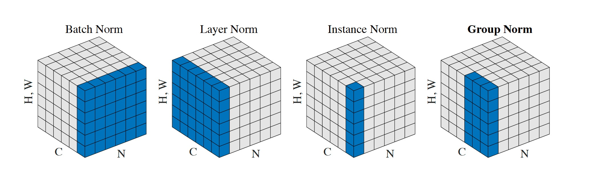
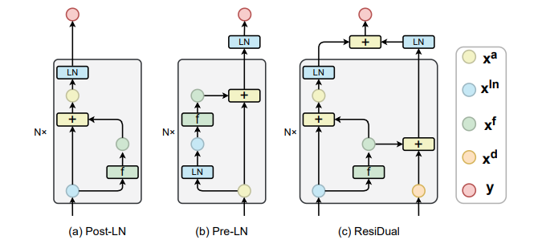
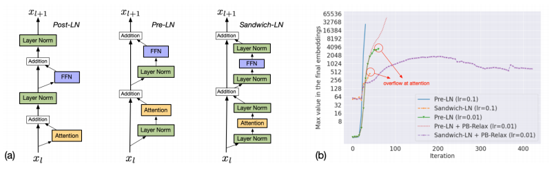
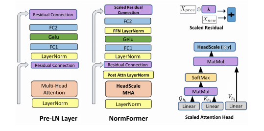
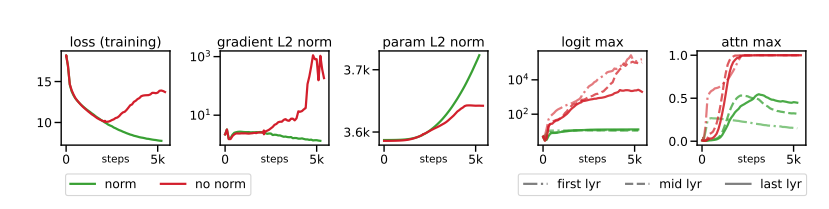

0. 这一篇讲什么
第 1 篇讲了原始 Transformer 的归一化：每个子层之后做 Post-LN，即 $x\leftarrow\mathrm{LayerNorm}(x + \mathrm{Sublayer}(x))$。现代大模型在这一点上几乎全部改掉了，变化发生在三个层面：
问题 做法 本篇
───────────────────────────────────────────────────────────────────────────────────
归一化做什么、怎么算 BatchNorm → LayerNorm → RMSNorm 第 2 节
归一化放在哪里 Post-LN → Pre-LN 第 3 节
Sandwich、输出归一化、DeepNorm、ResiDual 等 第 4 节
注意力内部的尺度 QK-Norm、logit soft-capping、QK-Clip 第 5 节
能不能不用归一化 ReZero、Dynamic Tanh 第 6 节
第 1 节先回答一个更基本的问题：Transformer 为什么需要归一化，归一化对前向和反向传播到底做了什么。
1. 为什么需要归一化
1.1 尺度会失控
深层网络的每一层都在上一层的输出上做变换。如果每一层都让激活值的尺度放大一点（或缩小一点），几十层累积下来就会指数级地爆炸（或消失）。笔记中的说法是：浅层的微小变化可能在深层被放大成巨大的变化，浅层的巨大变化也可能在深层消失。原因可能是某些权重过大，也可能是某些激活函数的输出过大。
Transformer 还有一个特有的问题：残差流。每一层的输出都被加到同一条残差流上（$x_{l+1} = x_l + F_l(\cdot)$），如果没有约束，残差流的尺度会随层数增长。尺度的变化有几个直接的后果：
- 下一层的输入分布不断变化，权重需要不断适应；
- 注意力 logits $q^\top k$ 随 $q, k$ 的尺度平方增长，softmax 趋向 one-hot，梯度消失（第 3 篇 1.2 节）；
- 低精度训练（FP16、BF16、FP8）的数值范围有限，激活值过大会溢出。
1.2 归一化不一定是"均值 0、方差 1"
笔记中强调了一点：归一化更本质的作用是控制数值尺度，而不一定要把均值变成 0、方差变成 1。
- LayerNorm：中心化（减均值）加尺度归一化（除以标准差）；
- RMSNorm：只除以均方根，不中心化，输出的均值不是 0；
- QK-Norm：只控制查询和键的长度，从而控制注意力 logits。
第 2 节会看到，RMSNorm 去掉中心化之后效果并不变差，这正说明起作用的主要是尺度控制。
1.3 归一化对梯度做了什么
不考虑可学习的缩放参数，RMSNorm 是
$$ y = \mathrm{RMSNorm}(x) = \frac{x}{\mathrm{RMS}(x)} = \sqrt d\cdot\frac{x}{\|x\|},\qquad \mathrm{RMS}(x) = \sqrt{\tfrac1d\textstyle\sum_ix_i^2} $$
它有两个关键性质。
尺度不变. 对任意 $\alpha>0$，$\mathrm{RMSNorm}(\alpha x) = \mathrm{RMSNorm}(x)$。输出只取决于 $x$ 的方向，不取决于它的长度。输出的模长永远是 $\sqrt d$。
雅可比矩阵. 对 $x$ 求导：
$$ \frac{\partial y}{\partial x} = \frac{\sqrt d}{\|x\|}\Big(I - \hat x\hat x^\top\Big),\qquad \hat x = \frac{x}{\|x\|} $$
（推导：$\partial(x/\|x\|)/\partial x = I/\|x\| - xx^\top/\|x\|^3$。）由此可以读出两件事：
- $\big(I - \hat x\hat x^\top\big)$ 是到 $x$ 的正交补空间上的投影。回传给 $x$ 的梯度总是与 $x$ 垂直，沿 $x$ 方向的分量被投影掉了。这与尺度不变是一致的：改变 $x$ 的长度不影响输出，所以损失对长度没有梯度；
- 梯度的大小按 $1/\|x\|$ 缩放。输入越大，回传的梯度越小。 如果归一化层前面是一个线性层 $x = Wh$，那么 $W$ 变大时，$W$ 收到的梯度会相应变小。这相当于一个自动的学习率调节：权重的尺度越大，有效学习率越小，形成负反馈，避免权重一路变大失控。
这比"归一化让每层的分布稳定"的说法更具体。BatchNorm 论文最初的解释是减少"内部协变量偏移"（internal covariate shift），后来 Santurkar et al.（2018）的实验表明，归一化的主要作用更可能是让损失曲面更平滑、梯度更可预测，而不是稳定分布本身。
下面用 NumPy 验证这些性质（第 2 节会用到第一个）：
import numpy as np
def layer_norm(x, eps=1e-6):
mu = x.mean(-1, keepdims=True)
var = ((x - mu) ** 2).mean(-1, keepdims=True)
return (x - mu) / np.sqrt(var + eps)
def rms_norm(x, eps=1e-6):
return x / np.sqrt((x ** 2).mean(-1, keepdims=True) + eps)
rng = np.random.default_rng(0)
d = 512
x = rng.standard_normal(d) * 3 + 1.5
# 1) LayerNorm = 先中心化，再做 RMSNorm
print(np.allclose(layer_norm(x), rms_norm(x - x.mean()))) # True
# 2) 尺度不变：放大 100 倍，输出不变
print(np.allclose(rms_norm(100 * x), rms_norm(x))) # True
# 3) 输出的模长固定为 sqrt(d)
print(np.linalg.norm(rms_norm(x)), np.sqrt(d)) # 22.627 22.627
# 4) 雅可比矩阵：J = (I - x̂ x̂^T) * sqrt(d) / ||x||，对 x 方向的梯度为 0
eps = 1e-6
J = np.zeros((d, d))
for i in range(d):
e = np.zeros(d); e[i] = eps
J[:, i] = (rms_norm(x + e, 0) - rms_norm(x - e, 0)) / (2 * eps)
xh = x / np.linalg.norm(x)
J_theory = (np.eye(d) - np.outer(xh, xh)) * np.sqrt(d) / np.linalg.norm(x)
print(np.abs(J - J_theory).max(), np.abs(J @ x).max()) # 约 5e-10 和 2e-8
2. 归一化什么：BatchNorm、LayerNorm 与 RMSNorm
2.1 BatchNorm 与 LayerNorm
两者的公式形式相同，区别在于在哪些元素上算均值和方差：
$$ y = \gamma\odot\frac{x - \mu}{\sqrt{\sigma^2 + \epsilon}} + \beta $$
- BatchNorm（Ioffe & Szegedy, 2015）：对每个特征维度，在一个批次的所有样本（以及序列或空间位置）上统计 $\mu, \sigma^2$。训练时用当前批次的统计量，同时维护一个滑动平均，推理时用滑动平均；
- LayerNorm（Ba et al., 2016）：对每个 token 自己的所有特征维度统计 $\mu, \sigma^2$，与批次中的其他样本、序列中的其他位置都无关。
$\gamma, \beta\in\mathbb R^d$ 是可学习的逐维缩放和偏移，初始化为 1 和 0，让网络在需要时可以恢复出任意的尺度和均值。

对 Transformer 来说，LayerNorm 的统计范围就是"一个 token 的 $d$ 维隐藏向量"。
2.2 为什么语言模型用 LayerNorm 而不是 BatchNorm
笔记中总结了三点原因：
- 变长序列与 padding：句子长短不一，批次中要补大量 padding。BatchNorm 跨样本统计时，padding 位置会混进统计量（或者需要专门的掩码处理），扭曲正常 token 的分布。LayerNorm 只看当前 token 自己，padding 完全不影响有效 token；
- 依赖批次大小：BatchNorm 需要足够大的批次，统计量才稳定。训练大模型时显存紧张，单卡的 micro-batch 常常只有 1 或 2，BatchNorm 的统计量会剧烈波动。LayerNorm 在批次为 1 时也能稳定工作；
- 训练与推理的一致性：BatchNorm 训练时用批次统计量、推理时用滑动平均，两者不一致；LayerNorm 训练和推理的计算完全相同。
再补充两点：
- 因果性：如果 BatchNorm 在序列维度上统计，位置 $t$ 的归一化结果就依赖于同一批中之后的 token。这在训练自回归模型时会泄露未来信息，而推理时这些未来 token 并不存在；
- 统计量本身不稳定：Shen et al.（2020）观察到，在 NLP 任务中，批次统计量在训练过程中的波动远大于在视觉任务中，这与文本数据的特点（不同批次的词分布差异大、存在少数取值极大的离群特征）有关，是 BatchNorm 在 Transformer 上效果差的直接原因。
2.3 RMSNorm
RMSNorm（Zhang & Sennrich, 2019）去掉了 LayerNorm 中的中心化和偏移：
$$ y = \gamma\odot\frac{x}{\mathrm{RMS}(x)},\qquad \mathrm{RMS}(x) = \sqrt{\frac1d\sum_{i=1}^dx_i^2 + \epsilon} $$
对比 LayerNorm：
| LayerNorm | RMSNorm | |
|---|---|---|
| 减均值 | 是 | 否 |
| 除以 | 标准差 | 均方根 |
| 可学习参数 | $\gamma, \beta$ | $\gamma$ |
| 平移不变（$x + c\mathbf 1$） | 是 | 否 |
| 缩放不变（$\alpha x$） | 是 | 是 |
| 归约操作 | 两次（均值、方差） | 一次（平方和） |
为什么去掉中心化不影响效果. 1.3 节验证过：LayerNorm 等于先中心化再做 RMSNorm。中心化是把 $x$ 投影到与全 1 向量 $\mathbf 1$ 垂直的超平面上，只去掉了一个方向上的自由度。RMSNorm 的作者认为，LayerNorm 的成功主要来自缩放不变性，而不是平移不变性。实验也表明 RMSNorm 与 LayerNorm 效果相当。笔记中的讨论是一致的：归一化不需要严格保持均值 0、方差 1，只要控制住向量的量级就够了。
为什么更快. 少一次归约（不用先算均值），少一个参数。归一化层的计算量很小，但它是访存密集的操作，每次都要把整个激活读一遍。论文报告不同模型上加速 7% 到 64%。在大模型训练中，这种逐元素和归约操作通常会和前后的算子融合在一起，节省更加可观。
从几何上看，两种归一化的输出都落在一个半径为 $\sqrt d$ 的球面上（忽略 $\gamma$），LayerNorm 的输出还额外被限制在与 $\mathbf 1$ 垂直的超平面内。
谁在用. T5 最早使用了 RMSNorm（不带偏置的 LayerNorm 变体），之后 Llama、Qwen、DeepSeek、Mistral、Gemma 等几乎所有主流大模型都使用 RMSNorm。
2.4 实现细节
几个容易被忽略但实际很重要的细节：
- 用 FP32 计算：平方和在 BF16 下容易损失精度甚至溢出。Llama 等实现会先把输入转成 FP32 计算归一化，再转回原精度；
- $\epsilon$ 的位置和大小：通常是 $\sqrt{\mathrm{mean}(x^2) + \epsilon}$，$\epsilon$ 取 $10^{-6}$ 或 $10^{-5}$。它防止除零，但取得太大会让很小的输入无法被正确放大；
- $\gamma$ 的参数化：Gemma 写成 $(1 + \gamma)\odot\hat x$，$\gamma$ 初始化为 0，这样权重衰减会把缩放拉向 1 而不是 0。常见做法是不对 $\gamma$ 做权重衰减；
- 最后一层的归一化：Pre-Norm 结构（第 3 节）中，所有 block 之后、LM Head 之前还要加一个归一化层。
import torch
import torch.nn as nn
class LayerNorm(nn.Module):
def __init__(self, d, eps=1e-5):
super().__init__()
self.eps = eps
self.gamma = nn.Parameter(torch.ones(d))
self.beta = nn.Parameter(torch.zeros(d))
def forward(self, x): # x: [..., d]
mean = x.mean(dim=-1, keepdim=True)
var = x.var(dim=-1, unbiased=False, keepdim=True) # 有偏方差，除以 d
return self.gamma * (x - mean) / torch.sqrt(var + self.eps) + self.beta
class RMSNorm(nn.Module):
def __init__(self, d, eps=1e-6):
super().__init__()
self.eps = eps
self.gamma = nn.Parameter(torch.ones(d)) # 没有 beta
def forward(self, x):
dtype = x.dtype
x = x.float() # 在 FP32 下计算
x = x * torch.rsqrt(x.pow(2).mean(dim=-1, keepdim=True) + self.eps)
return self.gamma * x.to(dtype)
注意方差用的是有偏估计（除以 $d$ 而不是 $d-1$），这与 PyTorch 自带的 nn.LayerNorm 一致。
3. 归一化放在哪里：Post-LN 与 Pre-LN
3.1 两种结构
笔记中特别提醒了一点：原始 Transformer 是先做残差相加，再做归一化。论文的图把 "Add & Norm" 画在一个方框里，容易看不清顺序。
$$ \textbf{Post-LN:}\quad x_{l+1} = \mathrm{Norm}\big(x_l + F_l(x_l)\big) $$
$$ \textbf{Pre-LN:}\quad x_{l+1} = x_l + F_l\big(\mathrm{Norm}(x_l)\big) $$
$F_l$ 是注意力或 FFN 子层。区别在于归一化是否作用在残差路径上：Post-LN 把残差相加的结果整个归一化，Pre-LN 只归一化送进子层的输入，残差路径本身是一条不经过任何变换的恒等映射。

3.2 Post-LN 为什么难训练
梯度要穿过每一层的 LN. 在 Post-LN 中，
$$ \frac{\partial x_{l+1}}{\partial x_l} = J_{\mathrm{LN}}\Big(I + \frac{\partial F_l}{\partial x_l}\Big) $$
从第 $L$ 层回传到第 $l$ 层，要连乘 $L-l$ 个 LN 的雅可比矩阵。1.3 节说过，每个雅可比都会投影掉一个方向并按 $1/\|x\|$ 缩放。层数多时，这些因子的乘积很难保持在合适的范围，浅层容易梯度消失。
初始化时输出层附近的梯度很大. Xiong et al.（2020）从理论上分析了初始化时的梯度：Post-LN 中，靠近输出的层的参数梯度很大，而且不随层数增加而减小；Pre-LN 中，各层参数的梯度按约 $1/\sqrt L$ 的比例缩小。用大学习率直接训练 Post-LN 时，输出层附近的参数一开始就会被更新得过猛，训练发散。这就是 Post-LN 离不开学习率预热的原因（第 1 篇第 3 节：原始 Transformer 预热 4000 步）：先用很小的学习率，等 Adam 的二阶矩估计稳定、参数进入合适的区域之后再加大。Xiong et al. 的实验表明，Pre-LN 可以去掉预热，并且收敛更快。
笔记中的说法是：Post-LN 对残差也做了归一化，削弱了残差的作用。更准确地说，Post-LN 中残差连接仍然存在，但它提供的恒等路径被每一层的归一化"打断"了，梯度不能不经变换地从深层直达浅层。
3.3 Pre-LN 为什么稳定
Pre-LN 中把递推展开：
$$ x_L = x_l + \sum_{k=l}^{L-1}F_k\big(\mathrm{Norm}(x_k)\big) $$
$$ \frac{\partial x_L}{\partial x_l} = I + \sum_{k=l}^{L-1}\frac{\partial F_k(\mathrm{Norm}(x_k))}{\partial x_l} $$
第一项是单位矩阵：无论中间有多少层，梯度总有一条不经过任何变换的通路从输出直达任意一层。这正是残差连接最初的设计意图（He et al., 2016），Pre-LN 把它完整保留了下来。所以 Pre-LN 训练稳定，对学习率和预热不敏感。GPT-2 之后的大模型几乎都采用 Pre-LN，Llama、Qwen、DeepSeek 等用的是 Pre-RMSNorm。
需要一个最终归一化. Pre-LN 的残差流本身从未被归一化，最后一个 block 的输出尺度可能很大。所以要在所有 block 之后、LM Head 之前加一个最终的归一化层（GPT-2 引入了这一点）。
3.4 Pre-LN 的代价：残差流越来越大
笔记中也指出了 Pre-LN 的问题：每一层都在未归一化的残差流上继续累加，模型很深时残差流的尺度会增长，后面的层的有效更新相对变小。
用一个简单的模拟来看：每个子层用一个随机线性层代替，比较 Pre-LN 和 Post-LN 中残差流的尺度：
import numpy as np
def rms_norm(x):
return x / np.sqrt((x ** 2).mean(-1, keepdims=True) + 1e-6)
rng = np.random.default_rng(0)
d, L = 256, 64
Ws = [rng.standard_normal((d, d)) / np.sqrt(d) for _ in range(L)]
x0 = rng.standard_normal(d)
rms = lambda v: np.sqrt((v ** 2).mean())
x_pre, x_post = x0.copy(), x0.copy()
for l, W in enumerate(Ws, 1):
f_pre = W @ rms_norm(x_pre)
x_pre = x_pre + f_pre # Pre-LN：x + F(Norm(x))
x_post = rms_norm(x_post + W @ x_post) # Post-LN：Norm(x + F(x))
if l in (1, 4, 16, 64):
print(f"第 {l:2d} 层 Pre-LN 残差流 RMS = {rms(x_pre):5.2f} "
f"本层更新占比 = {rms(f_pre) / rms(x_pre):.2f} Post-LN 输出 RMS = {rms(x_post):.2f}")
输出：
第 1 层 Pre-LN 残差流 RMS = 1.54 本层更新占比 = 0.65 Post-LN 输出 RMS = 1.00
第 4 层 Pre-LN 残差流 RMS = 2.33 本层更新占比 = 0.45 Post-LN 输出 RMS = 1.00
第 16 层 Pre-LN 残差流 RMS = 4.19 本层更新占比 = 0.25 Post-LN 输出 RMS = 1.00
第 64 层 Pre-LN 残差流 RMS = 8.60 本层更新占比 = 0.12 Post-LN 输出 RMS = 1.00
每个子层的输入都被归一化了，输出的尺度大致固定；而这些输出不断累加，残差流的 RMS 大约按 $\sqrt l$ 增长。于是第 $l$ 层的更新在残差流中所占的比例大约按 $1/\sqrt l$ 下降：越靠后的层，越难改变残差流的方向。实验中也观察到，Pre-LN 模型的深层往往可以被删掉而性能损失很小，说明它们没有被充分利用。另一方面，Post-LN 如果能训练成功，最终效果常常比 Pre-LN 好（Liu et al., 2020）。
这两个现象引出了第 4 节的各种折中方案，也引出了第 6 篇要讨论的残差连接本身的改进。
4. 位置的其他变体
4.1 Sandwich-LN：子层输出也归一化
CogView（Ding et al., 2021）训练大规模文生图模型时发现，Pre-LN 在训练中仍会出现数值溢出：子层的输出可能非常大，直接加到残差流上。Sandwich-LN 在子层的输出上再加一个归一化：
$$ x_{l+1} = x_l + \mathrm{Norm}_{\text{out}}\Big(F_l\big(\mathrm{Norm}_{\text{in}}(x_l)\big)\Big) $$

每一层加到残差流上的更新都被约束在固定的尺度，残差流不会因为个别层的输出异常而突然变大。Gemma 2 和 Gemma 3 在每个注意力和 FFN 子层的输入和输出上都使用 RMSNorm，就是这种结构。Kim et al.（2025）把这种"输入和输出都归一化"的结构称为 Peri-LN，并系统比较了它与 Pre-LN、Post-LN 的稳定性。
4.2 只在子层输出处归一化
OLMo 2（2024）采用了另一种安排：去掉子层输入处的归一化，只在子层输出处归一化，再加到残差流上：
$$ x_{l+1} = x_l + \mathrm{Norm}\big(F_l(x_l)\big) $$
它保留了 Pre-LN 的恒等残差路径（归一化不在残差路径上），又像 Post-LN 一样约束了每层更新的尺度。OLMo 2 报告这一改动和 QK-Norm（第 5 节）一起显著改善了训练的稳定性。
4.3 NormFormer
NormFormer（Shleifer et al., 2021）观察到 Pre-LN 中浅层的梯度远大于深层，在 Pre-LN 的基础上增加了三处操作：

4.4 DeepNorm：让 Post-LN 也能训练一千层
DeepNet（Wang et al., 2022）选择了另一个方向：保留 Post-LN（为了它的最终效果），想办法让它稳定。做法是放大残差、缩小子层的初始化：
$$ x_{l+1} = \mathrm{LN}\big(\alpha\,x_l + F_l(x_l)\big) $$
$\alpha>1$ 放大恒等路径的权重；同时把子层中部分投影矩阵（FFN 的两层、注意力的 $V$ 和输出投影）的初始化乘以 $\beta<1$。对 $N$ 层的 decoder-only 模型，$\alpha = (2N)^{1/4}$，$\beta = (8N)^{-1/4}$。论文从理论上推导了这些系数，使每次更新时模型输出的变化有上界，并据此把 Post-LN Transformer 训练到了 1000 层。
4.5 ResiDual 与 Mix-LN
- ResiDual（Xie et al., 2023）：同时维护两条残差流（图 2c）。一条按 Post-LN 的方式每层归一化，另一条按 Pre-LN 的方式不归一化地累加所有子层输出，最后把两条合并。目标是同时获得 Post-LN 的表示多样性和 Pre-LN 的梯度通路；
- Mix-LN（Li et al., 2024）：浅层用 Post-LN，深层用 Pre-LN。依据是 Pre-LN 的深层贡献不足，而 Post-LN 的浅层梯度不足，两者混合可以让各层的梯度更均衡。
4.6 小结
| 结构 | 公式 | 恒等残差路径 | 每层更新的尺度 | 代表 |
|---|---|---|---|---|
| Post-LN | $\mathrm{Norm}(x + F(x))$ | 否 | 受约束 | 原始 Transformer、BERT |
| Pre-LN | $x + F(\mathrm{Norm}(x))$ | 是 | 不受约束 | GPT-2/3、Llama、Qwen、DeepSeek |
| Sandwich / Peri-LN | $x + \mathrm{Norm}(F(\mathrm{Norm}(x)))$ | 是 | 受约束 | CogView、Gemma 2/3 |
| 输出归一化 | $x + \mathrm{Norm}(F(x))$ | 是 | 受约束 | OLMo 2 |
| DeepNorm | $\mathrm{LN}(\alpha x + F(x))$ | 否（但放大了 $x$） | 受约束 | DeepNet |
趋势是：恒等的残差路径要保留，每层加到残差流上的更新要约束。
5. QK-Norm：注意力内部的归一化
5.1 注意力 logits 为什么会增长
普通的 LayerNorm、RMSNorm 控制的是残差流或子层输入的尺度。但注意力内部还有一个尺度没有被控制：
$$ q^\top k = \|q\|\,\|k\|\cos\theta $$
$q = W_Q\,\mathrm{Norm}(x)$，$k = W_K\,\mathrm{Norm}(x)$。输入虽然被归一化了，但 $W_Q, W_K$ 在训练中可以不断变大，$\|q\|, \|k\|$ 随之增长。即使方向不变，logits 也会变得很大，softmax 接近 one-hot，注意力的熵塌缩到接近 0，梯度消失（第 3 篇 1.2 节）。在大模型中这常常表现为训练中途损失突然飙升。

5.2 做法
在计算分数之前，分别对查询和键做归一化（通常是 RMSNorm，在每个头的 $d_h$ 维上做，带可学习的缩放）：
$$ \hat q = \mathrm{RMSNorm}(q),\qquad \hat k = \mathrm{RMSNorm}(k),\qquad \mathrm{Attention} = \mathrm{softmax}\!\left(\frac{\hat Q\hat K^\top}{\sqrt{d_h}}\right)V $$
忽略缩放参数时，$\|\hat q\| = \|\hat k\| = \sqrt{d_h}$，于是
$$ \frac{\hat q^\top\hat k}{\sqrt{d_h}} = \sqrt{d_h}\cos\theta\in\big[-\sqrt{d_h},\ \sqrt{d_h}\big] $$
logits 有了明确的上界，注意力分数主要由方向相似度决定。可学习的缩放参数让模型仍然可以调节"温度"，在需要尖锐的注意力时放大 logits，但这种放大是受控的、需要显式学习的。
和 RoPE 的顺序. QK-Norm 在投影之后、RoPE 之前做（例如 Qwen3 先对每个头的 $q, k$ 做 RMSNorm，再施加 RoPE）。旋转不改变向量的长度，所以先归一化再旋转，长度仍然受控。
谁在用. 笔记中列出了 Qwen3、GLM-4.5、Gemma 3、OLMo 2、MiniMax-M2 等（还有 Gemma 4，这比我能核实的资料更新）。QK-Norm 最早在 ViT-22B 这样的大规模视觉模型中被验证，后来成为语言模型的常见配置。
5.3 Logit soft-capping
另一种控制 logits 的方法是直接截断。Gemma 2 对注意力 logits 和最终输出的 logits 做软截断：
$$ \mathrm{softcap}(z) = c\cdot\tanh(z/c) $$
$|z|\ll c$ 时几乎不变，$|z|$ 很大时被平滑地限制在 $(-c, c)$ 内。Gemma 2 对注意力 logits 取 $c = 50$，对最终 logits 取 $c = 30$。软截断的缺点是它要在 softmax 之前对每个分数单独做一次逐元素变换，与 FlashAttention 这类融合内核配合不便。Gemma 3 用 QK-Norm 替换了注意力上的软截断。
5.4 MLA 用不了 QK-Norm：QK-Clip
第 3 篇第 4 节讲过，MLA 在推理时用矩阵吸收的形式计算，每个头的键从未被显式算出来（缓存的是低维隐变量 $c$）。QK-Norm 需要先得到完整的 $k$ 才能对它做归一化，这与吸收形式冲突。
Kimi K2 使用 MLA，训练中也遇到了注意力 logits 爆炸的问题。它的解决办法是 QK-Clip：训练时监控每个头的最大 logit，一旦超过阈值 $\tau$，就在参数更新之后直接把该头的 $W_Q$ 和 $W_K$ 缩小，使最大 logit 回到阈值以内（缩放因子按 $\sqrt{\tau/\max\text{logit}}$ 分配给查询和键两侧）。这样不改变推理时的计算，只在训练时约束权重的尺度。它和 Muon 优化器一起，被称为 MuonClip。
6. 能不能不用归一化
归一化层需要归约操作，访存密集，也会在低精度训练和量化中引入麻烦。有一类工作尝试完全去掉它。
ReZero（Bachlechner et al., 2020）：去掉所有归一化，每个残差分支乘一个初始化为 0 的可学习标量：
$$ x_{l+1} = x_l + \alpha_l\,F_l(x_l),\qquad \alpha_l = 0\ \text{（初始化）} $$
初始化时每一层都是恒等映射，信号和梯度都完美传播；训练中 $\alpha_l$ 逐渐变大，各层逐步"加入"。
Dynamic Tanh（DyT）（Zhu et al., 2025）：作者观察到，训练好的 Transformer 中 LayerNorm 的输入输出关系很像一条 tanh 曲线：大部分值近似线性地缩放，少数极端值被压扁。于是直接用一个逐元素的函数代替归一化：
$$ \mathrm{DyT}(x) = \gamma\odot\tanh(\alpha x) + \beta $$
$\alpha$ 是可学习的标量。DyT 没有任何归约操作，论文在视觉和语言模型上报告了与 LayerNorm 相当的效果。
nGPT（Loshchilov et al., 2024）走向另一个极端：把所有隐藏向量和权重矩阵的行都约束在单位球面上，归一化成为模型的核心结构而不是附加组件。
这些方法目前在主流大语言模型中还没有取代 RMSNorm，但它们说明了归一化真正在做的事情：控制尺度、保持梯度通路。只要用别的方式做到这两点，归一化层本身并不是必需的。
7. 总结
7.1 一个现代 block 中的归一化
以 Qwen3 这类模型为例，一个 decoder block 中的归一化如下：
$$ \begin{aligned} h &= x + \mathrm{Attn}\big(\mathrm{RMSNorm}(x)\big),\quad\text{Attn 内部：}\ q, k\leftarrow\mathrm{RoPE}\big(\mathrm{RMSNorm}(q)\big),\ \mathrm{RoPE}\big(\mathrm{RMSNorm}(k)\big) \\ x_{\text{next}} &= h + \mathrm{FFN}\big(\mathrm{RMSNorm}(h)\big) \end{aligned} $$
所有 block 之后再接一个最终的 RMSNorm 和 LM Head。Gemma 3 在此基础上还给每个子层的输出加了 RMSNorm（Sandwich），OLMo 2 则把输入处的归一化移到了输出处。
7.2 小结
- 归一化的本质是控制尺度。它让输出与输入的长度无关，回传的梯度与输入垂直并按 $1/\|x\|$ 缩放，形成防止权重失控的负反馈；
- 语言模型用 LayerNorm 而不是 BatchNorm：不受 padding 和批次大小影响，训练和推理一致，不会在序列内泄露未来信息；RMSNorm 去掉中心化，效果相当、更快，是今天的默认选择；
- Post-LN 的梯度要穿过每一层的归一化，初始化时输出层附近梯度过大，必须预热；Pre-LN 保留了恒等的残差路径，训练稳定，但残差流随深度增长，深层的贡献被稀释；
- 后来的 Sandwich / Peri-LN、输出归一化、DeepNorm、ResiDual、Mix-LN 都在两者之间折中：保留恒等残差路径，同时约束每层更新的尺度；
- QK-Norm 控制注意力内部 $q, k$ 的长度，防止 logits 增长导致注意力塌缩；Gemma 2 的软截断是另一种做法；MLA 由于不显式计算键，用 QK-Clip 在训练时约束权重；
- ReZero、DyT 等无归一化方法表明，只要能控制尺度并保持梯度通路，归一化层本身不是必需的。
参考文献
- Ioffe & Szegedy. Batch Normalization: Accelerating Deep Network Training by Reducing Internal Covariate Shift. ICML 2015.
- He et al. Deep Residual Learning for Image Recognition. CVPR 2016.
- Ba, Kiros & Hinton. Layer Normalization. 2016.
- Vaswani et al. Attention Is All You Need. NeurIPS 2017.
- Santurkar et al. How Does Batch Normalization Help Optimization? NeurIPS 2018.
- Wu & He. Group Normalization. ECCV 2018.
- Zhang & Sennrich. Root Mean Square Layer Normalization. NeurIPS 2019.
- Radford et al. Language Models are Unsupervised Multitask Learners. 2019.
- Xiong et al. On Layer Normalization in the Transformer Architecture. ICML 2020.
- Liu et al. Understanding the Difficulty of Training Transformers. EMNLP 2020.
- Shen et al. PowerNorm: Rethinking Batch Normalization in Transformers. ICML 2020.
- Bachlechner et al. ReZero is All You Need: Fast Convergence at Large Depth. 2020.
- Ding et al. CogView: Mastering Text-to-Image Generation via Transformers. NeurIPS 2021.
- Shleifer, Weston & Ott. NormFormer: Improved Transformer Pretraining with Extra Normalization. 2021.
- Wang et al. DeepNet: Scaling Transformers to 1,000 Layers. 2022.
- Dehghani et al. Scaling Vision Transformers to 22 Billion Parameters. ICML 2023.
- Xie et al. ResiDual: Transformer with Dual Residual Connections. 2023.
- Gemma Team. Gemma 2: Improving Open Language Models at a Practical Size. 2024.
- Li et al. Mix-LN: Unleashing the Power of Deeper Layers by Combining Pre-LN and Post-LN. 2024.
- Loshchilov et al. nGPT: Normalized Transformer with Representation Learning on the Hypersphere. 2024.
- OLMo Team. 2 OLMo 2 Furious. 2024.
- Gemma Team. Gemma 3 Technical Report. 2025.
- Kim et al. Peri-LN: Revisiting Layer Normalization in the Transformer Architecture. 2025.
- Zhu et al. Transformers without Normalization. CVPR 2025.
- Kimi Team. Kimi K2: Open Agentic Intelligence. 2025.
- Qwen Team. Qwen3 Technical Report. 2025.